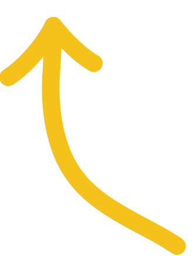
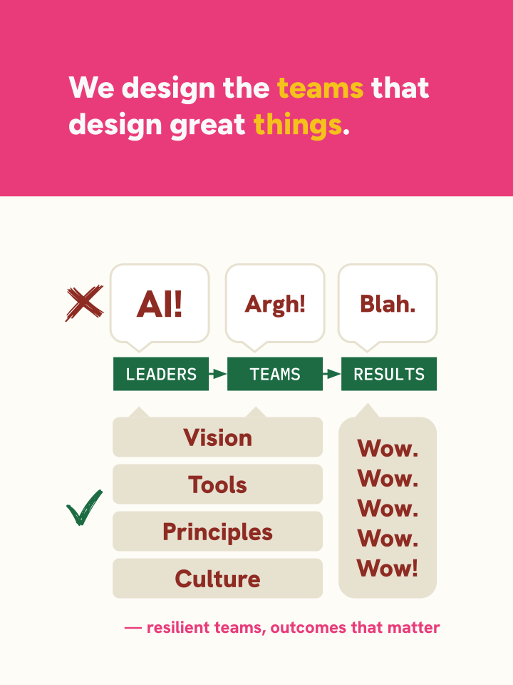
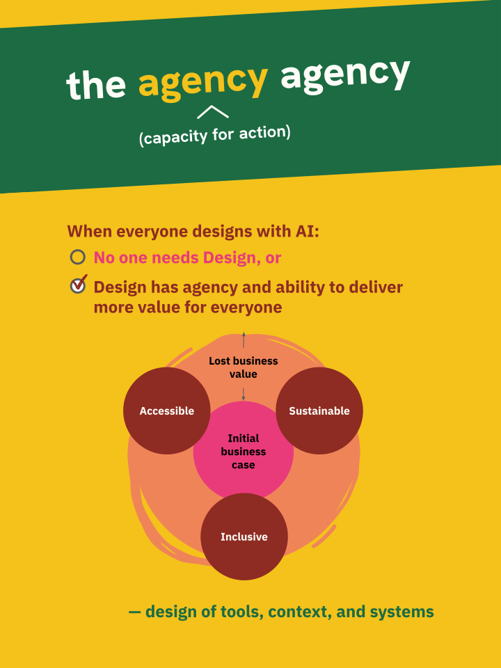
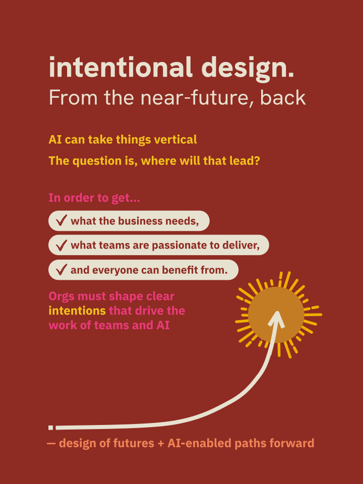

How can we frame what we do in a way that people quickly understand, need, and want to pay for?
We know we bring…
Which are delivered as…
To ultimately create…

or, whatever the opposite
of enshitification is



So…
| Frame | People + Teams | Tools + Approaches | Vision + Solutions |
|---|---|---|---|
| Category | Change management, Design Ops, Culture Transformation | AI solutions integration | Design Strategy, Product Strategy |